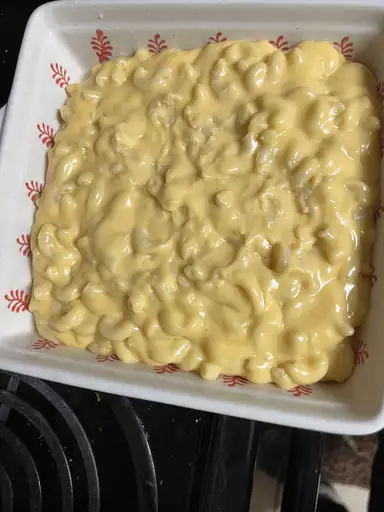

Simple Macaroni and Cheese

photo by Shaolanda Isbell, recipe by g0dluvsugly
Description
This macaroni and cheese is made with 7 ingredients you probably already have at home, and comes together in just 25 minutes.
Perfect for a weeknight, it is also adaptable if you have more time and want to throw it in the oven with additional toppings or add-ins.
Store leftovers in the fridge for three to four days, or freeze them for up to six months. Reheat with a splash of milk on the stove or in the microwave.
Ingredients
- 1 (8oz) box elbow macaroni
- 1/4 cup butter
- 1/4 cup all-purpose flour
- 1/2 tsp salt
- ground black pepper to taste
- 2 cups milk
- 2 cups shredded Cheddar cheese
Steps
- Gather the ingredients: portioning out your ingredients before you begin lets you take stock of anything missing and keeps the project organized.
- Cook the macaroni: bring a large pot of salted water to a boil before adding elbow macaroni. Stir occasionally. Cook for 8 minutes, or until pasta is tender to your liking.
- Melt butter: while macaroni is cooking, melt butter in a saucepan. This is the beginning of your sauce.
- Add flour, salt, and pepper into melted butter: whisk until the mixture is smooth and to keep the flour from burning while it browns. Allow to cook for about five minutes.
- Pour Milk: slowly pour milk into mixure while stirring. Cook and stir the mixture until it is smooth and bubbling, another five minutes or so.
- Add Cheddar: whisk in the cheese and stir until melted, two to four minutes.
- Add drained macaroni: drain the macaroni if you haven't already, and add it to your cheese sauce. Stir until all the macaroni is coated.
- Serve and enjoy or transfer to an oven safe pan for baking. This is also when you can add any add-ins.
Home